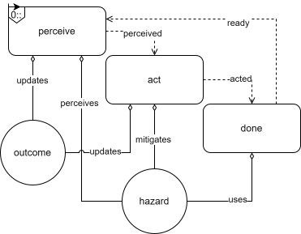
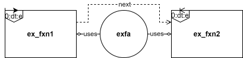
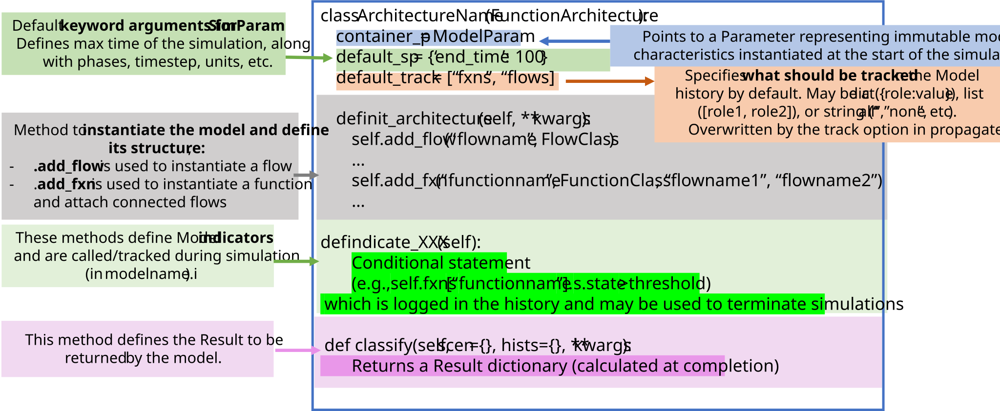

fmdtools.define.architecture
Package for defining system Architecture.
The architecture subpackage provides a representation of Architecture which may be used to represent aggregations/interactions of blocks in an overall combined simulation.
Different types of architectures are provided in the following modules:
Defines base |
|
Defines classes for representing action architectures. |
|
Defines |
|
Defines classes for representing functional architectures. |
|
Defines |
fmdtools.define.architecture.base
Defines base Architecture class used by other architecture classes.
Includes:
- Architecture class defining architectures.
- ArchitectureGraph class which represents Architecture in a ModelGraph.
- class fmdtools.define.architecture.base.Architecture(*args, h={}, update_rng=True, **kwargs)
Bases:
SimulableSuperclass for architectures.
Architectures are distinguished from Block classes in that they have flexible role dictionaries that are populated using add_xxx methods in an overall user-defined init_architecture method.
- simorder
Keeps track of simulable dynamic execution order
- Type:
OrderedSet
- staticsims
Keeps track of which simulables run in static execution step
- Type:
OrderedSet
- dynamicsims
Keeps track of which simulables run in dynamic execution step
- Type:
Orderedset
- staticflows
Flows to keep track of in static execution step
- Type:
list
- graph
multigraph view of sims and flows
- Type:
networkx graph
- add_flex_role_obj(flex_role, name, objclass=<class 'fmdtools.define.object.base.BaseObject'>, **kwargs)
Add a flexible role object to the architecture.
Used for add_fxn, add_flow, etc methods in subclasses. If called during copying (self.as_copy=True), the object is copied instead of instantiated.
- Parameters:
flex_role (str) – Name of the role dictionary to initialize the object in.
name (str) – Name of the object
objclass (class, optional) – Class to instantiate in the dict. The default is BaseObject.
use_copy (bool) – Whether to use existing copy in self.flows. The default is False.
**kwargs (kwargs) – Non-default kwargs to send to the object class or init_obj.
- add_flow(name, fclass=<class 'fmdtools.define.flow.base.Flow'>, **kwargs)
Add a flow with given attributes to the model.
- Parameters:
name (str) – Unique flow name to give the flow in the model
fclass (Class, optional) – Class to instantiate (e.g. CommsFlow, MultiFlow). Default is Flow. Class must take flowname, p, s as input to __init__() May alternatively provide already-instanced object.
kwargs (kwargs) – Dicts for non-default values to p, s, etc
- add_flows(*names, fclass=<class 'fmdtools.define.flow.base.Flow'>, **kwargs)
Add a set of flows with the same type and initial parameters.
- Parameters:
flownames (list) – Unique flow names to give the flows in the model
fclass (Class, optional) – Class to instantiate (e.g. CommsFlow, MultiFlow). Default is Flow. Class must take flowname, p, s as input to __init__() May alternatively provide already-instanced object.
kwargs (kwargs) – Dicts for non-default values to p, s, etc
- add_sim(flex_role, name, simclass, *flownames, **kwargs)
Add a Simulable to the given flex_role.
- Parameters:
flex_role (str) – Name of the flexible role to add to.
name (str) – Name to give the Simulable.
simclass (Simulable) – Simulable to instantiate.
flownames (list) – List of flows to associate with the function.
**kwargs (kwargs) – Flows, dicts for non-default values to p, s, etc.
- add_subgraph_edges(g, cond_edges=True, flow_edges=True, **kwargs)
Add edges connecting the objects (conditions and flows) to a graph.
- as_drawio(saveas='', **kwargs)
Generate DrawIO diagram from the architecture.
- Parameters:
saveas (str, optional) – File path to save the DrawIO XML. If empty, returns XML content.
**kwargs (dict) – Additional arguments passed to the graph creation.
- Returns:
xml_content – DrawIO XML content.
- Return type:
str
Examples
>>> from fmdtools.define.architecture.function import ExFxnArch >>> from fmdtools.analyze.graph.style import mod_prefix >>> loc = mod_prefix() >>> arch = ExFxnArch() >>> xml_content = arch.as_drawio() # Get XML content >>> xml_content = arch.as_drawio(loc+"architecture.drawio") # Save to file
- as_modelgraph(gtype=<class 'fmdtools.define.architecture.base.ArchitectureGraph'>, **kwargs)
Create and return the corresponding ModelGraph for the Object.
- base_type()
Return fmdtools type of the model class.
- build(construct_graph=False, require_connections=False, **kwargs)
Construct the overall model structure.
Use in subclasses to build the model after init_architecture is called.
- Parameters:
update_rng (bool) – Whether to update the seed
construct_graph (bool) – Whether to construct a graph at self.graph using construct_graph(). Default is True.
require_connections (bool) – Whether to require that all sims/flows be connected. Default is True.
- check_role(roletype, rolename)
Check that ‘arch_xa’ role is used for the arch.
- construct_graph(require_connections=True)
Create .graph nx.graph representation of the model.
- containers = ('t', 'sp')
- copy(flows={}, flex_to_copy=['fxn', 'act', 'comp'], **kwargs)
Copy the architecture at the current state.
- Parameters:
flows (dict) – Dict of flows to use in the copy.
- Returns:
copy – Copy of the curent architecture.
- Return type:
- create_repr(rolenames=['s', 'm'], sim_rolenames=['s', 'm'], with_classname=True, with_name=True, one_line=False)
Show string with sims and flows.
- dynamicsims
- flexible_roles = ['flow']
- flows
- flows_of_type(ftype)
Return the set of flows for each flow type.
- flowtypes()
Return the set of flow types used in the model.
- get_all_possible_track()
Get all possible tracking options.
- get_connected_sims(flowname)
Get the simulables connected to a given flow.
- get_flex_role_kwargs(flex_role, objclass, name, kwargs)
Get role keyword arguments for init_obj.
Ensures that (1) Rands are synced and (2) SimParams are passed down.
- Parameters:
flex_role (str) – Name of flexible role
objclass (class/obj) – Class or object being instantiated.
name (str) – Name of the object
kwargs (kwargs) – Keyword arguments to init_obj.
- Returns:
**kwargs – Keyword arguments to self.add_flex_role_obj
- Return type:
kwargs
- get_flows(*flownames, all_if_empty=True)
Return a list of the model flow objects.
- get_rand_states(auto_update_only=False)
Get dictionary of random states throughout the model objs.
- graph
- h
- indicators
- init_architecture(*args, **kwargs)
Use to initialize architecture.
- init_flexible_roles(**kwargs)
Initialize flexible roles.
If initializing as a copy, uses a passed copy instead.
- Parameters:
**kwargs (kwargs) – Existing roles (if any).
- is_dynamic()
Determine if dynamic based on containment of dynamic sims.
- is_static()
Determine if static based on containment of static sims.
- m
- mut_kwargs
- mutables
- name
- p
- plot_dynamic_run_order(rotateticks=False, title='Dynamic Run Order')
Plot the run order for the model during the dynamic propagation step.
The x-direction is the order of each function executed and the y are the corresponding flows acted on by the given methods.
- Parameters:
rotateticks (Bool, optional) – Whether to rotate the x-ticks (for bigger plots). The default is False.
title (str, optional) – String to use for the title (if any). The default is “Dynamic Run Order”.
- Returns:
fig (figure) – Matplotlib figure object
ax (axis) – Corresponding matplotlib axis
- prop_dynamic()
Run dynamic propagation functions.
Calls the defined dynamaic functions (e.g., those with dynamic_behavior() methods) in order the specified by the init_architecture method.
- prop_static()
Propagate behaviors through model graph (static propagation step).
Runs by maintaining a list of “active” sims to update, starting with all sims with a static_behavior() method to call. For each of these sims, it updates the static_behavior() method. If new mutables are present, the simulable is kept in the list (otherwise it is removed). If its connected flows have new mutables, other sims connected to that flow are added to the list. This algorithm is run until there are no more “active” sims, which may require several executions of each simulable’s static_behavior() method to propagate behavior through the entire model graph.
- r
- reset()
Reset the architecture and its contained objects.
- roletype = 'arch'
- root
- set_simorder(simorder)
Manually set the order of sims to be executed.
(otherwise it will be executed based on the sequence of add_sim calls)
- simorder
- sp
- staticflows
- staticsims
- t
- track
- update_arch_behaviors(proptype)
Update/propagate behavior in the architecture.
- Parameters:
proptype (str) – Type of propagation step to update (‘dynamic’, ‘static’, or ‘both’). If ‘dynamic’, this method calls self.prop_dynamic(). If ‘static’, this method calls self.prop_static()
- update_rng
- class fmdtools.define.architecture.base.ArchitectureGraph(mdl, get_states=True, time=0.0, check_info=False, **kwargs)
Bases:
ExtModelGraphBase ModelGraph for Architectures.
- draw_from(*args, rem_ind=2, **kwargs)
Set from a history (removes prefixes so it works at top level).
- nx_from_obj(mdl, with_root=False, **kwargs)
Generate the networkx.graph object corresponding to the model.
- Parameters:
mdl (FunctionArchitecture) – Model to create the graph representation of
- Returns:
g – networkx.Graph representation of model functions and flows (along with their attributes)
- Return type:
networkx.Graph
- set_nx_states(mdl, **kwargs)
Set the states of the graph.
- fmdtools.define.architecture.base.check_model_pickleability(model, try_pick=False)
Check to see which attributes of a model object will pickle.
Provides more detail about functions/flows.
- fmdtools.define.architecture.base.copy_flows(flowdict, flows={})
Copy flows, along with MultiFlow structures if present.
- Parameters:
flowdict (dict) – Dict of flow objects.
flows (dict, optional) – Dict of flow objects to overwrite existing flows (if provided). The default is {}.
- Returns:
cflows – Copied flow dictionary.
- Return type:
dict
fmdtools.define.architecture.action
Defines classes for representing action architectures.
Defines classes:
- ActionArchitecture class for representing action architectures.
- ActionArchitectureGraph: Shows a visualization of the internal Action
Sequence Graph of the Function Block, with Sequences as edges, with Flows (circular) and Actions (square) as nodes.
ActionArchitectureActGraph: Variant of ActionArchitectureGraph where only the sequence between actions is shown.ActionArchitectureFlowGraph: Variant of ActionArchitectureGraph where only the flow relationships between actions is shown.
The ActionArchitecture class is used to represent a sequenced of action taken by an agent. It is a composition of instantiated Action objects, Flow objects, and conditions as shown below:
{kind=link}
Example Action Architecture connecting action objects with flow objects and conditions.
In the Human action architecture, a human operator percieves and acts on a hazard and the total number of hazards acted on is recorded in the outcome flow. This can also be represented in FRDL using:
{kind=link}

Propagation network of example Action Architecture.
For more info on this example, see: The Action Sequence Graph Demo Model.
- class fmdtools.define.architecture.action.ActionArchitecture(**kwargs)
Bases:
ArchitectureConstruct the Action Sequence Graph with the given parameters.
- Parameters:
initial_action (str/list) –
- Initial action to set as active. Default is ‘auto’
’auto’ finds the starting node of the graph and uses it
’ActionName’ sets the given action as the first active action
providing a list of actions will set them all to active
(if multi-state rep is used)
state_rep ('finite-state'/'multi-state') –
- How the states of the system are represented. Default is ‘finite-state’
’finite-state’ means only one action in the system can be active at once (i.e., a finite state machine)
’multi-state’ means multiple actions can be performed at once
max_action_prop ('until_false'/'manual'/int) –
- How actions progress. Default is ‘until_false’
’until_false’ means actions are simulated until all outgoing conditions are false
providing an integer places a limit on the number of actions that can be
performed per timestep
per_timestep (bool) – Defines whether the action sequence graph is reset to the initial state each time-step (True) or stays in the current action (False). Default is False.
Examples
>>> exaa = ExampleActionArchitecture() >>> exaa exampleactionarchitecture ExampleActionArchitecture - t=Time(time=-0.1, timers={}) - m=Mode(mode='nominal', faults=set(), sub_faults=False) FLOWS: - exf=ExampleFlow(s=(x=1.0, y=1.0)) ACTS: - act_1=ExampleAction() - act_2=ExampleAction() CONDS: - act_1_done=<method act_1.indicate_done()> >>> exaa() >>> exaa.active_actions {'act_1'} >>> exaa() >>> exaa exampleactionarchitecture ExampleActionArchitecture - t=Time(time=2.0, timers={}) - m=Mode(mode='nominal', faults=set(), sub_faults=False) FLOWS: - exf=ExampleFlow(s=(x=4.0, y=1.0)) ACTS: - act_1=ExampleAction() - act_2=ExampleAction() CONDS: - act_1_done=<method act_1.indicate_done()> >>> exaa.active_actions {'act_2'} >>> ExampleActionArchitecture.fromjson(exaa.tojson(), name="fromjson") fromjson ExampleActionArchitecture - t=Time(time=2.0, timers={}) - m=Mode(mode='nominal', faults=set(), sub_faults=False) FLOWS: - exf=ExampleFlow(s=(x=4.0, y=1.0)) ACTS: - act_1=ExampleAction() - act_2=ExampleAction() CONDS: - act_1_done=<method act_1.indicate_done()>
- action_graph
- active_actions
- acts
- add_act(name, actclass, *flownames, **fkwargs)
Associate an Action with the architecture. Called after add_flow.
- Parameters:
name (str) – Internal Name for the Action
actclass (Action) – Action class to instantiate
*flownames (flow) – Flows (optional) which connect the actions
**kwargs (any) – kwargs to instantiate the Action with.
- add_cond(start_action, end_action, name='auto', condition='pass')
Associate a Condition with the ActionArchitecture.
Conditions specify when to precede from one action to the next.
- Parameters:
start_action (str) – Action where the condition is checked
end_action (str) – Action that the condition leads to.
name (str) – Name for the condition. Defaults to numbered conditions if none are provided.
condition (method) – Method in the class to use as a condition. Defaults to self.condition_pass if none are provided.
- as_modelgraph(gtype=<class 'fmdtools.define.architecture.action.ActionArchitectureGraph'>, **kwargs)
Create and return the corresponding ModelGraph for the Object.
- asdict(*args, exclude=[], **kwargs)
Present asdict (without bound conds methods).
- attrs = ('name', 'root', 'track', 'h', 'mut_kwargs', 'active_actions')
- base_type()
Return fmdtools type of the model class.
- build(construct_graph=False, active_actions=(), **kwargs)
Build the action graph.
- cond_pass()
- conds
- containers = ('t', 'sp', 'm')
- default_track = ('acts', 'flows', 'active_actions', 'i')
- dynamicsims
- flexible_roles = ['flow', 'act', 'cond']
- flow_graph
- flows
- graph
- h
- inc_sim_time(**kwargs)
Increment action simulation times to current.
- indicators
- initial_action = 'auto'
- is_dynamic()
Determine if dynamic based on containment of dynamic actions.
- is_static()
Determine if static based on containment of static actions.
- m
- max_action_prop = 'until_false'
- mut_kwargs
- mutables
- name
- p
- per_timestep = False
- prop_dynamic()
Propagate dynamic behavior through the ActionArchitecture graph.
If self.per_timestep is set to True, this will also reset the active actions each timestep to ensure the graph is reset to the initial active action.
- prop_graph(proptype)
Propagate behavior through the ActionArchitecture graph.
- Parameters:
proptype (str) – Type of propagation to perform (static or dynamic). If proptype=”static”, the static_behavior methods are called and local time is not incremented. If proptype=”dynamic”, the dynamic behavior methods are run and local time is incremented.
- prop_static()
Propagate static behavior through the ActionArchitecture graph.
- Parameters:
time (float) – Model time.
- r
- reset()
Reset the architecture and its contained objects.
- rolename = 'aa'
- roletypes = ['container']
- root
- set_active_actions(actions)
Set given action(s) as active.
- set_initial_active_action(*active_actions)
- simorder
- sp
- state_rep = 'finite-state'
- staticflows
- staticsims
- t
- track
- update_rng
The ActionArchitecture class can further be represented graphically using the ActionArchitectureGraph class:
- class fmdtools.define.architecture.action.ActionArchitectureGraph(mdl, get_states=True, time=0.0, check_info=False, **kwargs)
Bases:
ArchitectureGraphCreate a visual representation of an Action Architecture.
- Represents:
Sequence as edges
Flows as (circular) Nodes
Actions as (square) Nodes
Examples
>>> aag = ActionArchitectureGraph(ExampleActionArchitecture()) >>> aag.g.nodes() NodeView(('act_1', 'exf', 'act_2')) >>> aag.g.edges() OutEdgeView([('act_1', 'exf'), ('act_1', 'act_2'), ('act_2', 'exf')])
- draw_from(time, history, **kwargs)
Set from a history (removes prefixes so it works at top level).
- draw_graphviz(layout='twopi', overlap='voronoi', **kwargs)
Call Graph.draw_graphviz.
- nx_from_obj(aa, **kwargs)
Create Graph for ActionArchitecture.
- set_edge_labels(title='edgetype', title2='', subtext='name', **edge_label_styles)
Set / define the edge labels.
- Parameters:
title (str, optional) – property to get for title text. The default is ‘label’.
title2 (str, optional) – property to get for title text after the colon. The default is ‘’.
subtext (str, optional) – property to get for the subtext. The default is ‘’.
**edge_label_styles (dict) – edgeStyle arguments to overwrite.
- set_node_styles(active={}, **node_styles)
Set self.node_styles and self.edge_groups given the provided node styles.
- Parameters:
**node_styles (dict, optional) – Dictionary of tags, labels, and style kwargs for the nodes that overwrite the default. Has structure {tag:{label:kwargs}}, where kwargs are the keyword arguments to nx.draw_networkx_nodes. The default is {“label”:{}}.
- set_nx_states(aa, **kwargs)
Attach state and fault information to the underlying graph.
- Parameters:
aa (ActionArchitecture) – Underlying action sequence graph object to get states from
fmdtools.define.architecture.component
Defines ComponentArchitecture class to represent component architectures.
- class fmdtools.define.architecture.component.ComponentArchitecture(**kwargs)
Bases:
ArchitectureClass defining Component Architectures.
ComponentArchitectures represent the physical realization of a system, which may combine multiple components to fulfil given functions.
Component Architectures are meant to be able to be called externally by functions to determine how individual component behaviors aggregate as a given function.
However, they can also simulate via their own static/dynamic behaviors.
Examples
>>> exc = ExampleComponentArchitecture() >>> exc examplecomponentarchitecture ExampleComponentArchitecture - t=Time(time=-0.1, timers={}) - m=Mode(mode='nominal', faults=set(), sub_faults=False) COMPS: - c1=ExampleComponent(s=(x=5.0, y=5.0)) - c2=ExampleComponent(s=(x=10.0, y=10.0)) >>> exc() >>> exc examplecomponentarchitecture ExampleComponentArchitecture - t=Time(time=1.0, timers={}) - m=Mode(mode='nominal', faults=set(), sub_faults=False) COMPS: - c1=ExampleComponent(s=(x=7.0, y=6.0)) - c2=ExampleComponent(s=(x=12.0, y=11.0)) >>> exc() >>> exc examplecomponentarchitecture ExampleComponentArchitecture - t=Time(time=2.0, timers={}) - m=Mode(mode='nominal', faults=set(), sub_faults=False) COMPS: - c1=ExampleComponent(s=(x=7.0, y=7.0)) - c2=ExampleComponent(s=(x=12.0, y=12.0))
- add_comp(name, compclass, *flownames, **kwargs)
Associate a Component with the architecture. Called after add_flow.
- Parameters:
name (str) – Internal Name for the Component
compclass (Component) – Component class to instantiate
*flownames (flow) – Flows (optional) which connect the components
**kwargs (any) – kwargs to instantiate the Component with
- build(construct_graph=True, require_connections=False, **kwargs)
Build the function architecture - connections should be enforced.
- comps
- containers = ('t', 'sp', 'm')
- default_track = ('comps', 'flows', 'i')
- dynamicsims
- flexible_roles = ['flow', 'comp']
- flows
- graph
- h
- indicators
- m
- mut_kwargs
- mutables
- name
- p
- r
- rolename = 'ca'
- roletypes = ['container']
- root
- simorder
- sp
- staticflows
- staticsims
- t
- track
- update_rng
- class fmdtools.define.architecture.component.ExampleComponentArchitecture(**kwargs)
Bases:
ComponentArchitectureExample Component Architecture Class demonstrating individual simulation.
In this architecture, custom static_behavior and dynamic_behavior methods are used to enable the individual simulation of the ComponentArchitecture.
- comps
- containers = ('t', 'sp', 'm')
- dynamicsims
- flows
- graph
- h
- indicators
- init_architecture(*args, **kwargs)
Use to initialize architecture.
- m
- mut_kwargs
- mutables
- name
- p
- r
- root
- simorder
- sp
- staticflows
- staticsims
- t
- track
- update_rng
fmdtools.define.architecture.function
Defines classes for representing functional architectures.
Defines classes:
FunctionArchitectureclass to represent functional architecture.FunctionArchitectureGraph: Graphs Model of functions and flow for display where both functions and flows are nodes.FunctionArchitectureFlowGraph: Graphs Model of flows for display, where flows are set as nodes and connections (via functions) are edges.FunctionArchitectureCompGraph: Graphs Model of functions, and flows, with component containment relationships shown for functions.FunctionArchitectureFxnGraph: Graphs representation of the functions of the model, where functions are nodes and flows are edgesFunctionArchitectureTypeGraph: Graph representation of model Classes, showing the containment relationship between function classes and flow classes in the model.
The FunctionArchitecture class is used to define the high-level function-flow structure of a system model. It is a composition of instantiated Function and Flow objects, as shown below:
{kind=link}
Example Function Architecture connecting function objects with flow objects.
In FRDL, this object may be represented as:
{kind=link}

Example Function Architecture propagation structure represented in FRDL.
To define a FunctionArchitecture class, it can be helpful to use the following code template:
{kind=link}

Code template for FunctionArchitecture classes.
- class fmdtools.define.architecture.function.FunctionArchitecture(*args, h={}, update_rng=True, **kwargs)
Bases:
ArchitectureClass representing a functional architecture.
Functional architectures enable the execution of multiple Function objects interacting with each other over time. The FunctionArchitecture uses an object-oriented, undirected graph-based model representation to enable the arbitrary propagation of flow states through the functions of the system. As opposed to a procedural directed graph-based model representation, in which each function has an ``input’’ and ``output’’, the undirected graph approach enables one to propagate behaviors in multiple directions. For example, in a pump system, closing a valve can be modelled to not just reduce flow in the downstream pipe, but also increase pressure in upstream pipes.
Flexible Roles
- flowsdict
dictionary of flows objects in the model indexed by name
- fxnsdict
dictionary of functions in the model indexed by name
Examples
>>> class ExFxnArch(FunctionArchitecture): ... container_p = ExampleParameter ... def init_architecture(self, **kwargs): ... self.add_flow("exf", ExampleFlow, s={'x': 0.0, 'y': 0.0}) ... self.add_fxn("ex_fxn", ExampleFunction, "exf", p=self.p) ... self.add_fxn("ex_fxn2", ExampleFunction, "exf", p=self.p)
>>> exfa = ExFxnArch(name="exfa") >>> exfa exfa ExFxnArch - t=Time(time=-0.1, timers={}) - m=Mode(mode='nominal', faults=set(), sub_faults=False) FLOWS: - exf=ExampleFlow(s=(x=0.0, y=0.0)) FXNS: - ex_fxn=ExampleFunction(s=(x=0.0, y=0.0), m=(mode='standby', faults=set(), sub_faults=False)) - ex_fxn2=ExampleFunction(s=(x=0.0, y=0.0), m=(mode='standby', faults=set(), sub_faults=False))
This type of functional architecture only has dynamic functions:
>>> exfa.dynamicsims OrderedSet(['ex_fxn', 'ex_fxn2']) >>> exfa.staticsims OrderedSet()
This can in turn be simulated using FunctionArchitecture’s built-in .propagate method. Note how the flow exf accumulates both ex_fxn and ex_fxn2 as reflected in their behavior methods:
>>> exfa() >>> exfa exfa ExFxnArch - t=Time(time=1.0, timers={}) - m=Mode(mode='nominal', faults=set(), sub_faults=False) FLOWS: - exf=ExampleFlow(s=(x=2.0, y=0.0)) FXNS: - ex_fxn=ExampleFunction(s=(x=1.0, y=0.0), m=(mode='standby', faults=set(), sub_faults=False)) - ex_fxn2=ExampleFunction(s=(x=1.0, y=0.0), m=(mode='standby', faults=set(), sub_faults=False))
>>> exfa() >>> exfa exfa ExFxnArch - t=Time(time=2.0, timers={}) - m=Mode(mode='nominal', faults=set(), sub_faults=False) FLOWS: - exf=ExampleFlow(s=(x=6.0, y=0.0)) FXNS: - ex_fxn=ExampleFunction(s=(x=2.0, y=0.0), m=(mode='standby', faults=set(), sub_faults=False)) - ex_fxn2=ExampleFunction(s=(x=2.0, y=0.0), m=(mode='standby', faults=set(), sub_faults=False)) >>> ExFxnArch.fromjson(exfa.tojson(exclude=["h"]), name="fromjson") fromjson ExFxnArch - t=Time(time=2.0, timers={}) - m=Mode(mode='nominal', faults=set(), sub_faults=False) FLOWS: - exf=ExampleFlow(s=(x=6.0, y=0.0)) FXNS: - ex_fxn=ExampleFunction(s=(x=2.0, y=0.0), m=(mode='standby', faults=set(), sub_faults=False)) - ex_fxn2=ExampleFunction(s=(x=2.0, y=0.0), m=(mode='standby', faults=set(), sub_faults=False)) >>> exfa.save("ex_fa.json") >>> exfa.load("ex_fa.json", delete=True) exfa ExFxnArch - t=Time(time=2.0, timers={}) - m=Mode(mode='nominal', faults=set(), sub_faults=False) FLOWS: - exf=ExampleFlow(s=(x=6.0, y=0.0)) FXNS: - ex_fxn=ExampleFunction(s=(x=2.0, y=0.0), m=(mode='standby', faults=set(), sub_faults=False)) - ex_fxn2=ExampleFunction(s=(x=2.0, y=0.0), m=(mode='standby', faults=set(), sub_faults=False))
Architectures also copy, which is important for staged execution: >>> efa = ExFxnArch() >>> efa2 = efa.copy() >>> efa2.fxns[‘ex_fxn’].exf.s.x=2.0 >>> efa2.flows[‘exf’].s.x np.float64(2.0) >>> efa.flows[‘exf’].s.x np.float64(0.0)
- add_fxn(name, fclass, *flownames, **fkwargs)
Instantiate a given function in the model.
- Parameters:
name (str) – Name to give the function.
fclass (Class) – Class to instantiate the function as. If no class has been developed, the user can send the block.GenericFxn class.
flownames (list) – List of flows to associate with the function.
args_f (dict.) – Other parameters to send to the __init__ method of the function class
fkwargs (dict) – Parameters to send to __init__ method of the Function superclass
- as_modelgraph(gtype=<class 'fmdtools.define.architecture.function.FunctionArchitectureGraph'>, **kwargs)
Create and return the corresponding ModelGraph for the Object.
- base_type()
Return fmdtools type of the model class.
- build(construct_graph=True, require_connections=True, **kwargs)
Build the function architecture - connections should be enforced.
- calc_repaircost(additional_cost=0, default_cost=0, max_cost=inf)
Calculate the repair cost of the fault modes in the model.
Uses given mode cost information for each function mode (in fxn.m).
- Parameters:
additional_cost (int/float) – Additional cost to add if there are faults in the model. Default is 0.
default_cost (int/float) – Cost to use for each fault mode if no fault cost information given in assoc_faultmodes/ Default is 0.
max_cost (int/float) – Maximum cost of repair (e.g. cost of replacement). Default is np.inf
- Returns:
repair_cost – Cost of repairing the fault modes in the given model
- Return type:
float
- containers = ('t', 'sp', 'm')
- default_name = 'model'
- default_track = ('fxns', 'flows', 'i')
- dynamicsims
- flexible_roles = ['flow', 'fxn']
- flows
- flowtypes_for_fxnclasses()
Return the flows required by each function class in the model (as a dict).
- fxnclasses()
Return the set of class names used in the model.
- fxns
- fxns_of_class(ftype)
Return dict of funcitons corresponding to the given class name ftype.
- get_memory()
Return the approximate memory usage of the model.
Includes profile of fxn/flow memory usage.
- graph
- h
- indicators
- m
- mut_kwargs
- mutables
- name
- p
- r
- reset()
Reset the model to the initial state (with no faults, etc).
- rolename = 'fa'
- roletypes = ['container']
- root
- simorder
- sp
- staticflows
- staticsims
- t
- track
- update_rng
The FunctionArchitecture class can be represented with a number of dedicated graph classes, below:
- class fmdtools.define.architecture.function.FunctionArchitectureGraph(mdl, get_states=True, time=0.0, check_info=False, **kwargs)
Bases:
ArchitectureGraphGraph of FunctionArchitecture, where both functions and flows are nodes.
If get_states option is used on instantiation, a states dict is associated with the edges/nodes which can then be used to visualize function/flow attributes.
Examples
>>> efa = FunctionArchitectureGraph(ExFxnArch()) >>> efa.g.nodes() NodeView(('exfxnarch.flows.exf', 'exfxnarch.fxns.ex_fxn', 'exfxnarch.fxns.ex_fxn2')) >>> efa.g.edges() OutEdgeView([('exfxnarch.fxns.ex_fxn', 'exfxnarch.flows.exf'), ('exfxnarch.fxns.ex_fxn2', 'exfxnarch.flows.exf')])
- draw_graphviz(layout='twopi', overlap='voronoi', **kwargs)
Draw the graph using pygraphviz for publication-quality figures.
Note that the style may not match one-to-one with the defined none/edge styles.
- Parameters:
disp (bool) – Whether to display the plot. The default is True.
saveas (str) – File to save the plot as. The default is ‘’ (which doesn’t save the plot’).
**kwargs (kwargs) – Arguments for various supporting functions: (set_pos, set_edge_styles, set_edge_labels, set_node_styles, set_node_labels, etc) Can also provide kwargs for Digraph() initialization.
- Returns:
dot – Graph object corresponding to the figure.
- Return type:
PyGraphviz DiGraph
- gen_func_arch_graph(mdl)
Generate function architecture graph.
- get_dynamicnodes(mdl)
Get dynamic node information for set_exec_order.
- get_multi_edges(graph, subedges)
Attach functions/flows (subedges arg) to edges.
- Parameters:
graph (networkx graph) – Graph of model to represent
subedges (list) – nodes from the full graph which will become edges in the subgraph (e.g., individual flows)
- Returns:
flows – Dictionary of edges with keys representing each sub-attribute of the edge (e.g., flows)
- Return type:
dict
- get_staticnodes(mdl)
Get static node information for set_exec_order.
- set_exec_order(mdl, static={}, dynamic={}, next_edges={}, label_order=True, label_tstep=True)
Overlay FunctionArchitectureGraph execution order data on graph structure.
- Parameters:
mdl (Model) – Model to plot the execution order of.
static (dict/False, optional) – kwargs to overwrite the default style for functions/flows in the static execution step. If False, static functions are not differentiated. The default is {}.
dynamic (dict/False, optional) – kwargs to overwrite the default style for functions/flows in the dynamic execution step. If False, dynamic functions are not differentiated. The default is {}.
next_edges (dict) – kwargs to overwrite the default style for edges indicating the flow order. If False, these edges are not added. the default is {}.
label_order (bool, optional) – Whether to label execution order (with a number on each node). The default is True.
label_tstep (bool, optional) – Whether to label each timestep (with a number in the subtitle). The default is True.
- set_flow_nodestates(mdl, with_root=True)
Attach attributes to Graph notes corresponding to flow states.
- Parameters:
mdl (Model) – Model to represent
- set_fxn_nodestates(mdl, with_root=True)
Attach attributes to Graph corresponding to function states.
- Parameters:
mdl (Model) – Model to represent
- class fmdtools.define.architecture.function.FunctionArchitectureFxnGraph(mdl, get_states=True, time=0.0, check_info=False, **kwargs)
Bases:
FunctionArchitectureGraphCreate a graph representation of the functions of the model.
In this graph, functions are nodes and flows are edges.
Examples
>>> efa = FunctionArchitectureFxnGraph(ExFxnArch()) >>> efa.g.nodes() NodeView(('exfxnarch.fxns.ex_fxn', 'exfxnarch.fxns.ex_fxn2')) >>> efa.g.edges() EdgeView([('exfxnarch.fxns.ex_fxn', 'exfxnarch.fxns.ex_fxn2')]) >>> efa.g.edges[('exfxnarch.fxns.ex_fxn', 'exfxnarch.fxns.ex_fxn2')] {'flows': "['exfxnarch.flows.exf']", 'edgetype': 'flows', 'exfxnarch.flows.exf': {'s': ExampleState(x=0.0, y=0.0), 'indicators': []}}
- draw_from(*args, rem_ind=0, **kwargs)
Set from a history (removes prefixes so it works at top level).
- nx_from_obj(mdl)
Generate the networkx.graph object corresponding to the model.
- Parameters:
mdl (FunctionArchitecture) – Model to create the graph representation of
- Returns:
g – networkx.Graph representation of model functions and flows (along with their attributes)
- Return type:
networkx.Graph
- set_degraded(other)
Set ‘degraded’ state in networkx graph.
Uses difference between states with another Graph object.
- Parameters:
other (Graph) – (assumed nominal) Graph to compare to
- set_edge_labels(title='edgetype', title2='', subtext='flows', **edge_label_styles)
Create labels using Labels.from_iterator for the edges in the graph.
- Parameters:
title (str, optional) – property to get for title text. The default is ‘id’.
title2 (str, optional) – property to get for title text after the colon. The default is ‘’.
subtext (str, optional) – property to get for the subtext. The default is ‘states’.
**edge_label_styles (dict) – LabelStyle arguments to overwrite.
- set_flow_edgestates(mdl)
- set_nx_states(mdl)
Set the states of the graph.
- class fmdtools.define.architecture.function.FunctionArchitectureFlowGraph(mdl, get_states=True, time=0.0, check_info=False, **kwargs)
Bases:
FunctionArchitectureGraphCreate a Graph of FunctionArchitecture flows.
In this Graph, flows are set as nodes and connecting functions are edges.
Examples
>>> efa = FunctionArchitectureFlowGraph(ExFxnArch()) >>> efa.g.nodes() NodeView(('exfxnarch.flows.exf',)) >>> efa.g.nodes['exfxnarch.flows.exf'] {'nodetype': 'Flow', 'classname': 'ExampleFlow', 'bipartite': 1, 's': ExampleState(x=0.0, y=0.0), 'indicators': []}
- nx_from_obj(mdl, **kwargs)
Generate the networkx.graph object corresponding to the model.
- Parameters:
mdl (FunctionArchitecture) – Model to create the graph representation of
- Returns:
g – networkx.Graph representation of model functions and flows (along with their attributes)
- Return type:
networkx.Graph
- set_edge_labels(title='edgetype', title2='', subtext='functions', **edge_label_styles)
Create labels using Labels.from_iterator for the edges in the graph.
- Parameters:
title (str, optional) – property to get for title text. The default is ‘id’.
title2 (str, optional) – property to get for title text after the colon. The default is ‘’.
subtext (str, optional) – property to get for the subtext. The default is ‘states’.
**edge_label_styles (dict) – LabelStyle arguments to overwrite.
- set_nx_states(mdl, **kwargs)
Set the states of the graph.
- class fmdtools.define.architecture.function.FunctionArchitectureTypeGraph(mdl, get_states=True, time=0.0, check_info=False, **kwargs)
Bases:
FunctionArchitectureGraphCreates a graph representation of FunctionArchitecture Classes.
Shows the containment relationship between function classes and flow classes in the model.
Examples
>>> efa = FunctionArchitectureTypeGraph(ExFxnArch()) >>> efa.g.nodes() NodeView(('ExFxnArch', 'ExampleFunction', 'ExampleFlow')) >>> efa.g.edges() OutEdgeView([('ExFxnArch', 'ExampleFunction'), ('ExampleFunction', 'ExampleFlow')])
- draw_graphviz(layout='dot', ranksep='2.0', **kwargs)
Draw the graph using pygraphviz for publication-quality figures.
Note that the style may not match one-to-one with the defined none/edge styles.
- Parameters:
disp (bool) – Whether to display the plot. The default is True.
saveas (str) – File to save the plot as. The default is ‘’ (which doesn’t save the plot’).
**kwargs (kwargs) – Arguments for various supporting functions: (set_pos, set_edge_styles, set_edge_labels, set_node_styles, set_node_labels, etc) Can also provide kwargs for Digraph() initialization.
- Returns:
dot – Graph object corresponding to the figure.
- Return type:
PyGraphviz DiGraph
- nx_from_obj(mdl, withflows=True, **kwargs)
Return graph with just the type relationships of the function/flow classes.
- Parameters:
mdl (Model) – Model to represent
withflows (bool, optional) – Whether to include flows, default is True
- Returns:
g – networkx directed graph of the type relationships
- Return type:
nx.DiGraph
- set_degraded(nomg)
Set ‘degraded’ state in networkx graph.
Uses difference between states with another Graph object.
- Parameters:
other (Graph) – (assumed nominal) Graph to compare to
- set_exec_order(*args, **kwargs)
Overlay FunctionArchitectureGraph execution order data on graph structure.
- Parameters:
mdl (Model) – Model to plot the execution order of.
static (dict/False, optional) – kwargs to overwrite the default style for functions/flows in the static execution step. If False, static functions are not differentiated. The default is {}.
dynamic (dict/False, optional) – kwargs to overwrite the default style for functions/flows in the dynamic execution step. If False, dynamic functions are not differentiated. The default is {}.
next_edges (dict) – kwargs to overwrite the default style for edges indicating the flow order. If False, these edges are not added. the default is {}.
label_order (bool, optional) – Whether to label execution order (with a number on each node). The default is True.
label_tstep (bool, optional) – Whether to label each timestep (with a number in the subtitle). The default is True.
- set_nx_states(mdl)
Set the states of the graph.
- set_pos(auto=True, **pos)
Set graph positions to given positions, (automatically or manually).
- Parameters:
auto (str, optional) – Whether to auto-layout the node position. The default is True. If a string is provided, calls method_layout, where method is the string provided
overwrite (bool, optional) – Whether to overwrite the existing pos. Default is True.
**pos (nodename=(x,y)) – Positions of nodes to set. Otherwise updates to the auto-layout or (0.5,0.5)
fmdtools.define.architecture.geom
Defines GeomArchitecture class for representing multiple geometries in a
Environment.
Classes
GeomArchitecture: Architecture of multiple geometries.
ExGeomArch: Example GeomArchitecture.
- class fmdtools.define.architecture.geom.ExGeomArch(*args, h={}, update_rng=True, **kwargs)
Bases:
GeomArchitectureExample Geometric Architecture for testing etc.
- containers = ('t', 'sp', 'p')
- dynamic_behavior()
Example dynamic behavior demonstrating dynamic buffers.
- dynamicsims
- flows
- geoms
- graph
- h
- indicators
- init_architecture(**kwargs)
Initialize example geoms.
- m
- mut_kwargs
- mutables
- name
- p
- r
- root
- simorder
- sp
- static_behavior()
- staticflows
- staticsims
- t
- track
- update_rng
- class fmdtools.define.architecture.geom.GeomArchitecture(*args, h={}, update_rng=True, **kwargs)
Bases:
ArchitectureAgglomeration of multiple geoms/shapes.
Architecture is defined using add_shape method in user-defined init_shapes method.
Examples
for an architecture with the geoms already defined:
>>> class ExGeomArch(GeomArchitecture): ... def init_architecture(self, **kwargs): ... self.add_geom("ex_point", ExPoint) ... self.add_geom("ex_line", ExLine) ... self.add_geom("ex_poly", ExPoly) ... self.add_geom("ex_geom", p={'geojson': '{"type": "Point","coordinates": [1, 2]}'}) ... def dynamic_behavior(self): ... if self.t.time >= 1.0: ... self.geoms["ex_point"].s.buffer_around = self.t.time ... def static_behavior(self): ... self.geoms["ex_line"].s.buffer_around = self.geoms["ex_point"].s.buffer_around
This can then be used in containing classes (e.g., environments) that need multiple geoms. We can then access the individual geoms in the geoms dict, e.g.,:
>>> ega = ExGeomArch() >>> ega exgeomarch ExGeomArch - t=Time(time=-0.1, timers={}) GEOMS: - ex_point=ExPoint(s=(occupied=False, buffer_around=1.0)) - ex_line=ExLine(s=(occupied=False, buffer_around=1.0)) - ex_poly=ExPoly(s=(occupied=False, buffer_around=1.0)) - ex_geom=GeomJSON() >>> ega.geoms['ex_point'].s ExGeomState(occupied=False, buffer_around=1.0) >>> ega.h time: array(101) geoms.ex_point.s.occupied: array(101) geoms.ex_point.s.buffer_around: array(101) geoms.ex_line.s.occupied: array(101) geoms.ex_line.s.buffer_around: array(101) geoms.ex_poly.s.occupied: array(101) geoms.ex_poly.s.buffer_around: array(101) >>> ega.return_mutables() ((), (False, 1.0), (False, 1.0), (False, 1.0), (np.float64(-0.1), np.int32(0), np.False_, np.False_, np.False_))
GeomArchitectures are also simulable provided dynamic_behavior and static_behavior methods as shown below. Note that this behavior must be called externally, such as from a function, to have meaning in a broader modelling context.
>>> ega(time=2.0) >>> ega exgeomarch ExGeomArch - t=Time(time=2.0, timers={}) GEOMS: - ex_point=ExPoint(s=(occupied=False, buffer_around=2.0)) - ex_line=ExLine(s=(occupied=False, buffer_around=2.0)) - ex_poly=ExPoly(s=(occupied=False, buffer_around=1.0)) - ex_geom=GeomJSON() >>> ExGeomArch.fromjson(ega.tojson(), name="fromjson") fromjson ExGeomArch - t=Time(time=2.0, timers={}) GEOMS: - ex_point=ExPoint(s=(occupied=False, buffer_around=2.0)) - ex_line=ExLine(s=(occupied=False, buffer_around=2.0)) - ex_poly=ExPoly(s=(occupied=False, buffer_around=1.0)) - ex_geom=GeomJSON()
They should also copy independently: >>> ega2 = ega.copy() >>> ega2 exgeomarch ExGeomArch - t=Time(time=2.0, timers={}) GEOMS: - ex_point=ExPoint(s=(occupied=False, buffer_around=2.0)) - ex_line=ExLine(s=(occupied=False, buffer_around=2.0)) - ex_poly=ExPoly(s=(occupied=False, buffer_around=1.0)) - ex_geom=GeomJSON() >>> ExGeomArch.fromjson(ega.tojson(), name=”fromjson”) fromjson ExGeomArch - t=Time(time=2.0, timers={}) GEOMS: - ex_point=ExPoint(s=(occupied=False, buffer_around=2.0)) - ex_line=ExLine(s=(occupied=False, buffer_around=2.0)) - ex_poly=ExPoly(s=(occupied=False, buffer_around=1.0)) - ex_geom=GeomJSON() >>> ega2.geoms[‘ex_point’].s.buffer_around = 4.0 >>> ega.geoms[‘ex_point’].s.buffer_around 2.0
- add_geom(name, pclass=<class 'fmdtools.define.object.geom.GeomJSON'>, **kwargs)
Add/instantiate an individual geom to the architecture.
By default the geom is a GeomJSON, which matches provided geomjson. Can also use a custom class like GeomPoint/GeomLine/GeomPoly.
- Parameters:
name (str) – Name for the geom.
pclass (BaseGeom, optional) – Class to instantiate. The default is GeomJSON.
**kwargs (kwargs) – Keyword arguments to the class.
- all_at(*pt)
Find all geoms (and buffers) a given is at.
- Parameters:
- Returns:
all_at – Names of geoms where the point is at (and their properties)
- Return type:
dict
Examples
>>> exga = ExGeomArch() >>> exga.all_at(1.0, 1.0) {'ex_point': ['shape', 'on', 'around'], 'ex_line': ['shape', 'on', 'around'], 'ex_poly': ['shape', 'around']} >>> exga.all_at(0.0, 0.0) {'ex_line': ['shape', 'on', 'around'], 'ex_poly': ['shape', 'around']} >>> exga.all_at(0.4, 0.3) {'ex_point': ['on', 'around'], 'ex_line': ['on', 'around'], 'ex_poly': ['around']}
- all_possible = ['geoms']
- base_type()
Return fmdtools type of the model class.
- build(construct_graph=False, **kwargs)
Build the action graph.
- check_geom_class(gclass, baseclass)
Check that geom class/object inherits from given base class.
- containers = ('t', 'sp', 'p')
- copy(flex_to_copy=['geom'], **kwargs)
Copy the architecture at the current state.
- Parameters:
flows (dict) – Dict of flows to use in the copy.
- Returns:
copy – Copy of the curent architecture.
- Return type:
- default_track = ['geoms']
- dynamicsims
- flexible_roles = ['geom']
- flows
- geoms
- graph
- h
- indicators
- init_architecture(**kwargs)
Use this placeholder method to define custom architectures.
- m
- mut_kwargs
- mutables
- name
- p
- prop_static()
Since geoms are not connected, just run in sequence.
- r
- rolename = 'ga'
- root
- show(geoms={'all': {}}, fig=None, ax=None, figsize=(4, 4), z=False, **kwargs)
Show the shapes of a GeomArchitecture all on one plot.
- Parameters:
geoms (dict, optional) – Individual shapes to plot and their corresponding kwargs. The default is {‘all’: {}}.
fig (matplotlib.figure, optional) – Existing Figure. The default is None.
ax (matplotlib.axis, optional) – Existing axis. The default is None.
figsize (tuple, optional) – Size for figure (if instantiating). The default is (4, 4).
z (bool/number, optional) – If plotting on a 3d axis, set z to a number which will be the z-level. The default is False.
**kwargs (kwargs) – Overall kwargs to show.geom for all geoms.
- Returns:
fig (figure) – Matplotlib figure object
ax (axis) – Corresponding matplotlib axis
- show_from(hist, t, **kwargs)
Show the GeomArch at the given time in the provided history.
- Parameters:
hist (History) – History of states for the GeomArchitecture.
t (int) – Time in the history to show the state of the GeomArchitecture at.
**kwargs (kwargs) – Keyword arguments to GeomArchitecture.show().
- Returns:
fig (figure) – Matplotlib figure object
ax (axis) – Corresponding matplotlib axis
- simorder
- sp
- staticflows
- staticsims
- t
- track
- update_rng